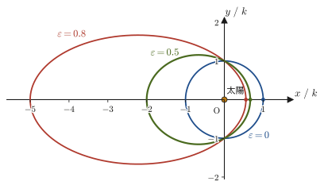
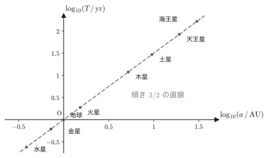
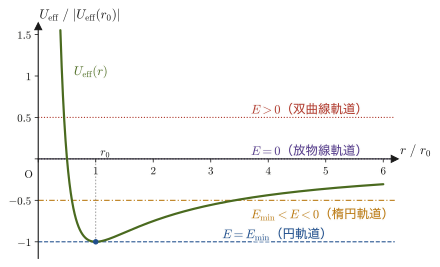
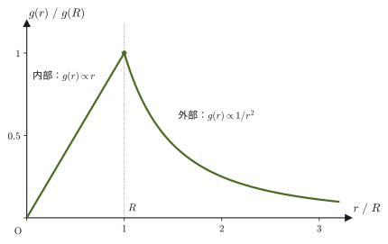
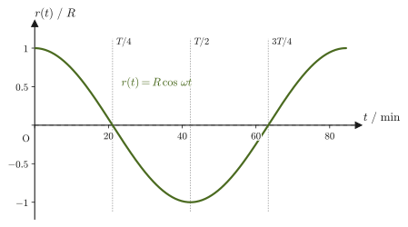

第8章中心力と惑星の運動 — ケプラーの法則と地球トンネル
夜空を横切る惑星の動きは，古代から人類を魅了してきた．16〜17世紀にティコ・ブラーエ（Tycho Brahe）が残した精密な観測データをもとに，ヨハネス・ケプラー（Johannes Kepler）は惑星の軌道について3つの経験則（ケプラーの法則）を発見した——軌道は太陽を焦点とする楕円であること，太陽と惑星を結ぶ線分が単位時間に掃く面積は一定であること，公転周期の2乗が軌道の大きさの3乗に比例すること．これらは当時，観測データから帰納的に見いだされた「経験則」にすぎなかった．それから半世紀ほど後，ニュートン（Newton）は，万有引力の法則 $F=GMm/r^2$ とニュートンの運動方程式（第2章）だけから，ケプラーの3つの法則をすべて数学的に導いてみせた．経験則が力学の基本法則から演繹される——この章は，その導出を一行も省略せずに追体験する．高校物理ではケプラーの3法則，面積速度 $\frac12 rv\sin\theta$，万有引力の位置エネルギー $-GMm/r$，第2宇宙速度 $11.2\ \mathrm{km/s}$ などを公式として覚えた人が多いだろう．この章では，それらをすべて，運動方程式・角運動量保存・エネルギー保存から導き直す．
もう一つ，この章では奇妙で美しい思考実験を扱う——地球の中心を通るまっすぐなトンネルを掘り，そこに物を落としたらどうなるか．答えは「振動する」．しかも，摩擦や空気抵抗がなければ，その振動はばね振り子とまったく同じ数学（第7章）に従い，周期は地球の大きさによらず，密度だけで決まる約84分になる．この結果を導くために，まず「一様な球の内部では，自分より外側の物質からの引力は互いに打ち消し合う」という美しい定理（殻定理，shell theorem）を証明する．中心力・角運動量保存・エネルギー保存・微分方程式という，この章までに積み上げてきた道具が，惑星の軌道と地球トンネルという一見かけ離れた2つの問題を，同じ土俵の上で解いてしまう様子を見てほしい．
- 中心力（つねに1点を向く力）のもとでは角運動量が保存すること，およびそれが「面積速度一定」（ケプラーの第2法則）と同じ内容であることの証明
- 万有引力を中心力として，ケプラーの第1法則（惑星は太陽を焦点とする楕円軌道を描く）を，導出の各行を省略せずに証明する
- ケプラーの第3法則 $T^2\propto a^3$ を，第2法則の結果と楕円の幾何から導く
- 万有引力の位置エネルギー $U=-GMm/r$，有効ポテンシャルによる軌道の分類（円・楕円・放物線・双曲線），脱出速度
- 一様な球の内部・外部の重力（殻定理）の証明と，それを使った地球トンネルの運動方程式・周期（約84分）の導出
もとにしたノート：望月泰英『物理学ノート 力学』 pp. 22–23．
8.1 中心力と角運動量保存 — 面積速度一定（ケプラーの第2法則）
前章までに，質点にはたらく力が重力・ばねの復元力・空気抵抗のように具体的に指定された場合の運動を調べてきた．この章では，特に重要な1つのクラスの力——中心力（central force）——を考える．惑星が太陽から受ける万有引力は中心力の代表例であり，後の電磁気学で学ぶクーロン力（点電荷どうしの力，第35章）も同じ数学的構造をもつ．中心力のもとでの運動には，力の詳しい形によらずに成り立つ一般的な性質があり，それがケプラーの第2法則（面積速度一定）の正体である．
定義8.1 中心力
空間に固定された1点 $\mathrm O$ を考える．質点にはたらく力 $\bm F$ が，つねに $\mathrm O$ と質点を結ぶ直線上を向き，その大きさが $\mathrm O$ からの距離 $r$ だけで決まる（角度 $\theta$ にはよらない）とき，$\bm F$ を点 $\mathrm O$ のまわりの中心力（central force）という．$\mathrm O$ を原点とする極座標 $(r,\theta)$ の動径方向の単位ベクトル $\bm e_r$（第3章）を使うと，中心力は
$$ \bm F=f(r)\,\bm e_r $$という形に書ける．ここで $f(r)$ は $r$ だけの関数であり，$f(r)\lt 0$ なら $\mathrm O$ へ向かう引力，$f(r)\gt 0$ なら $\mathrm O$ から遠ざかる向きの斥力である．万有引力 $f(r)=-GMm/r^2$（$G$ は万有引力定数，$M$ は中心の天体の質量）はこの形の中心力の代表例であり，この章ではこれを $\mathrm O$ に固定した太陽，質点を惑星として扱う（太陽も動くはずだが，太陽の質量が惑星よりはるかに大きいため，太陽を静止した原点とみなす近似がよく成り立つ）．
中心力が保存力であることは，すでに第4章 4.4.3節（定理4.3）で示した．この章では，中心力が角運動量に及ぼす効果を調べる．
高校物理で学んだ万有引力の法則（law of universal gravitation）は，質量 $M$ と $m$ の2つの質点が距離 $r$ だけ離れているとき，互いに大きさ $F=GMm/r^2$ の引力を及ぼし合う，というものである．比例定数 $G=6.674\times10^{-11}\ \mathrm{N\,m^2/kg^2}$ が万有引力定数で，単位は $G\times\mathrm{kg}\times\mathrm{kg}/\mathrm{m^2}=\mathrm N$ となるように決まっている．引力は $\mathrm O$ に向かう向き（$-\bm e_r$ の向き）にはたらくから，$f(r)=-GMm/r^2$ と書ける．
8.1.1 中心力のもとでの角運動量保存
第2章で学んだとおり，原点 $\mathrm O$ のまわりの角運動量 $\bm L=\bm r\times\bm p$（$\bm p=m\bm v$ は運動量）と力のモーメント $\bm N=\bm r\times\bm F$ の間には，運動方程式 $\bm F=\dd\bm p/\dd t$ から導かれる一般的な関係
$$ \bm N=\frac{\dd\bm L}{\dd t} $$が成り立つ（力のモーメント＝角運動量の変化率）．中心力の場合，$\bm F=f(r)\bm e_r$ は位置ベクトル $\bm r=r\bm e_r$ と平行（またはちょうど逆向き）なベクトルなので，力のモーメントは
$$ \bm N=\bm r\times\bm F=(r\bm e_r)\times\big(f(r)\bm e_r\big)=r\,f(r)\,(\bm e_r\times\bm e_r)=\bm 0 $$となる．外積の定義（大学数学 第15章 15.3節）より，どんなベクトル $\bm a$ についても $\bm a\times\bm a=\bm 0$（自分自身との外積は零ベクトル．平行な2つのベクトルがつくる「平行四辺形」の面積が0になることに対応する）だから，$\bm e_r\times\bm e_r=\bm 0$ である．したがって，
$$ \frac{\dd\bm L}{\dd t}=\bm N=\bm 0 $$となり，$\bm L$ は時間によらず一定である．
法則8.1 中心力のもとでの角運動量保存
質点が原点 $\mathrm O$ のまわりの中心力だけを受けて運動するとき，$\mathrm O$ のまわりの角運動量 $\bm L=\bm r\times\bm p$ は時間によらず一定に保たれる．
イメージ：なぜ中心力で角運動量が保存するのか
力のモーメント $\bm N=\bm r\times\bm F$ は，直感的には「力が原点のまわりに物体を回転させようとする効果」を表す量である．中心力は，力の向きがつねに原点と質点を結ぶ直線（つまり位置ベクトル $\bm r$ そのものの方向）を向いているので，原点のまわりに「ひねる」効果をまったく持たない——ちょうど，ドアの蝶番の延長線上を押しても，ドアが回転しないのと同じである．回転させる効果（トルク）が常に0なのだから，回転の勢いを表す角運動量が変化しないのは自然である．
8.1.2 極座標での角運動量と面積速度
角運動量保存則 $\bm L=\text{一定}$ を，運動が起こる平面内の極座標 $(r,\theta)$（第3章）で具体的に書き下そう．極座標での速度は
$$ \bm v=\dot r\,\bm e_r+r\dot\theta\,\bm e_\theta $$であった（第6章 6.1節）．これを用いると，角運動量は
$$ \bm L=\bm r\times\bm p=m\,\bm r\times\bm v=m(r\bm e_r)\times(\dot r\,\bm e_r+r\dot\theta\,\bm e_\theta) =mr\dot r\,(\bm e_r\times\bm e_r)+mr^2\dot\theta\,(\bm e_r\times\bm e_\theta) $$となる（外積の分配法則を使って展開した）．$\bm e_r\times\bm e_r=\bm 0$ であり，$\bm e_r,\bm e_\theta$ は大きさ1で互いに直交するベクトルなので，右ネジの法則（大学数学 第15章 15.3節）より $\bm e_r\times\bm e_\theta=\bm e_z$（運動が起こる平面に垂直な単位ベクトル）である．したがって，
\begin{equation} \bm L=mr^2\dot\theta\,\bm e_z \label{eq:8-L-polar} \end{equation}となる．$\bm e_z$ は一定の向きのベクトルなので，$\bm L$ が一定であることは，スカラー量
\begin{equation} L\equiv mr^2\dot\theta \label{eq:8-L-scalar} \end{equation}が時間によらず一定であることと同じである．これは，運動が1つの平面内で起こることも同時に意味している——$\bm L\ne\bm 0$ の場合，角運動量 $\bm L=\bm r\times\bm p$ の向きが一定で，しかも $\bm r$ は $\bm L$ と垂直だから，位置ベクトルはつねに $\bm L$ に垂直な平面内にある．中心力を受ける質点の軌道は，必ず平面内の曲線になる．（$\bm L=\bm 0$ の場合は $\bm r$ と $\bm v$ が平行になり，運動は原点を通る1本の直線上に限られる．この場合は平面が1つに決まらないが，直線運動なので，やはり平面内の運動と考えてよい．）
法則8.2 面積速度一定の法則（ケプラーの第2法則）
質点が時刻 $t$ から $t+\dd t$ の間に位置ベクトル $\bm r$ を $\dd\theta$ だけ回転させるとき，位置ベクトルが掃く微小な面積は，半径 $r$，中心角 $\dd\theta$ の扇形の面積として
$$ \dd A=\frac12 r^2\,\dd\theta $$と書ける（円の面積の公式 $\pi r^2$ を全周 $2\pi$ で割ったものが単位角あたりの面積 $r^2/2$ であることの，微小角への一般化）．両辺を $\dd t$ で割ると，単位時間に掃く面積（面積速度，areal velocity）は
\begin{equation} \frac{\dd A}{\dd t}=\frac12 r^2\dot\theta=\frac{L}{2m} \label{eq:8-areal-velocity} \end{equation}である．中心力のもとでは $L$ は一定であり，$m$ も一定だから，面積速度 $\dd A/\dd t$ は時間によらず一定である．すなわち，質点と中心を結ぶ線分は，等しい時間に等しい面積を掃く．これがケプラーの第2法則であり，力の形 $f(r)$ を万有引力に限らず，どんな中心力についても成り立つ一般的な性質である．
注意：面積速度一定と「等速」は違う
面積速度一定の法則は，質点の速さ $|\bm v|$ が一定であるとは言っていない．式 \eqref{eq:8-areal-velocity} より $r^2\dot\theta=$ 一定なので，$r$ が小さい（中心に近い）ところでは $\dot\theta$ が大きく，質点は角度方向に速く動く．実際，8.2節で見るように，惑星は太陽に近い近日点で最も速く，太陽から遠い遠日点で最も遅く動く．「面積速度が一定」であって「速さが一定」ではない，という点を混同しないようにしよう．
例題8.1 彗星の近日点・遠日点での速さ
ある彗星は，太陽のまわりを楕円軌道で運動しており，太陽に最も近づく近日点での距離は $r_1=0.50\ \mathrm{AU}$，そのときの速さは $v_1=56\ \mathrm{km/s}$ である（$1\ \mathrm{AU}=1.496\times10^{11}\ \mathrm{m}$，太陽からの平均距離＝地球の公転半径）．太陽から最も遠ざかる遠日点での距離が $r_2=4.0\ \mathrm{AU}$ であるとき，遠日点での速さ $v_2$ を求めよ．また，この彗星が本当に太陽に束縛された楕円軌道を描くこと（力学的エネルギーが負であること）を，近日点での値を使って確かめよ．
解答 近日点・遠日点では，質点は太陽に最も近い（または遠い）ところにいるので，動径方向の速度成分 $\dot r$ はちょうど0であり（$r(t)$ が極小・極大になる瞬間だから），速度は接線方向（角度方向）の成分だけをもつ．したがって，これらの点では $|\bm v|=r|\dot\theta|$ が成り立つ．法則8.2の角運動量保存則 $L=mr^2\dot\theta=$ 一定を，$v=r\dot\theta$（符号を考えず大きさだけ考える）を使って書き直すと，
$$ L=mr^2\dot\theta=m\,r\,(r\dot\theta)=m\,r\,v $$となる．$m$ は変わらないので，近日点と遠日点で $rv$ の値が等しい：
$$ r_1v_1=r_2v_2 $$これを $v_2$ について解くと，
$$ v_2=\frac{r_1v_1}{r_2}=\frac{0.50\ \mathrm{AU}\times56\ \mathrm{km/s}}{4.0\ \mathrm{AU}}=\frac{28\ \mathrm{AU\cdot km/s}}{4.0\ \mathrm{AU}}=7.0\ \mathrm{km/s} $$（AU の単位は分子・分母で約分されて消えるので，$\mathrm{km/s}$ の答えがそのまま得られる）．近日点では遠日点よりも太陽に8倍近いので，速さも8倍（$56/7.0=8$）速いことが分かる——面積速度一定の法則が定性的に予言するとおり，中心に近いほど速く動く．
次に，束縛されていることを確かめる．太陽の $GM_\odot=1.327\times10^{20}\ \mathrm{m^3/s^2}$（8.3節の例題8.3で求める）と，$r_1=0.50\times1.496\times10^{11}\ \mathrm m=7.48\times10^{10}\ \mathrm m$，$v_1=5.6\times10^4\ \mathrm{m/s}$ を使うと，近日点での単位質量あたりの力学的エネルギー（運動エネルギー＋位置エネルギー $-GM_\odot/r_1$．位置エネルギーは8.4.1項で導く）は
$$ \frac Em=\frac12v_1^2-\frac{GM_\odot}{r_1}=\frac12(5.6\times10^4)^2-\frac{1.327\times10^{20}}{7.48\times10^{10}}\approx1.57\times10^{9}-1.77\times10^{9}\approx-2.1\times10^{8}\ \mathrm{J/kg} $$となり，負である．負なら束縛されている（8.4節の定理8.1）ので，軌道は閉じた楕円になる．もし近日点の速さを $v_1=60\ \mathrm{km/s}$ にすると，この距離での太陽の脱出速度 $\sqrt{2GM_\odot/r_1}\approx59.6\ \mathrm{km/s}$（8.4.3項）を超えてしまい，$E\gt0$ の双曲線軌道になって遠日点そのものが存在しなくなる．与えられた距離の組 $(r_1,r_2)=(0.50,\ 4.0)\ \mathrm{AU}$ に対して楕円軌道が存在するためには，近日点の速さは約 $56\ \mathrm{km/s}$ でなければならないのである．
8.2 ケプラーの第1法則の証明
法則8.3 ケプラーの第1法則
太陽のまわりを運動する惑星は，太陽を1つの焦点とする楕円軌道を描く．
この法則を，万有引力の法則とニュートンの運動方程式だけから証明しよう．太陽を原点 $\mathrm O$ に固定し（太陽の質量 $M$ は惑星の質量 $m$ よりはるかに大きいので，太陽が静止しているとみなせる），惑星の位置を極座標 $(r,\theta)$ で表す．惑星が太陽から受ける万有引力は，太陽へ向かう中心力
$$ \begin{cases} f_r=-\dfrac{GMm}{r^2} \\[1mm] f_\theta=0 \end{cases} $$である（動径方向の成分だけをもち，角度方向の成分は0）．
導出：ケプラーの第1法則の証明
第6章で導いた極座標での加速度の公式 $a_r=\ddot r-r\dot\theta^2,\ a_\theta=2\dot r\dot\theta+r\ddot\theta$ を，運動方程式 $\bm F=m\bm a$ の動径・角度成分にそのまま代入する：
$$ f_r=ma_r=m(\ddot r-r\dot\theta^2)=-\frac{GMm}{r^2}, \qquad f_\theta=ma_\theta=m(2\dot r\dot\theta+r\ddot\theta)=0 $$両辺を $m$（$\ne0$）で割ると，
$$ \begin{cases} \ddot r-r\dot\theta^2=-\dfrac{GM}{r^2} & \cdots\text{①}\\[2mm] 2\dot r\dot\theta+r\ddot\theta=0 \end{cases} $$という連立の常微分方程式が得られる．2番目の式を，積の微分法則を逆にたどって整理する．実際，$r^2\dot\theta$ を $t$ で微分すると，積の微分法則より
$$ \frac{\dd}{\dd t}(r^2\dot\theta)=2r\dot r\,\dot\theta+r^2\ddot\theta=r(2\dot r\dot\theta+r\ddot\theta) $$となるので，両辺を $r$（$\ne0$）で割れば $2\dot r\dot\theta+r\ddot\theta=\dfrac1r\dfrac{\dd}{\dd t}(r^2\dot\theta)$ という恒等式が得られる．これを2番目の式に使うと，
$$ \begin{cases} \ddot r-r\dot\theta^2=-\dfrac{GM}{r^2} & \cdots\text{①}\\[2mm] \dfrac1r\dfrac{\dd}{\dd t}(r^2\dot\theta)=0 & \cdots\text{②} \end{cases} $$という形になる．②は，$r\ne0$ である限り $\dfrac{\dd}{\dd t}(r^2\dot\theta)=0$ と同値であり，これは $r^2\dot\theta$ が時間によらず一定であることを意味する——まさに8.1節の法則8.2（角運動量保存・面積速度一定）そのものである．そこでこの一定値を
$$ r^2\dot\theta=C_1\qquad\left(\text{したがって}\quad\frac12 r^2\dot\theta=\frac{C_1}{2}=\text{一定（面積速度一定の法則）}\right) $$とおく（$C_1=L/m$，$L$ は8.1節の角運動量の大きさ）．次に，①の両辺に $r^3$（$\gt0$）を掛ける．こうすると左辺第2項が $r^2\dot\theta$ だけで書き表せるからである：
$$ \ddot r\,r^3-r\dot\theta^2\cdot r^3=\ddot r\,r^3-r^4\dot\theta^2=\ddot r\,r^3-(r^2\dot\theta)^2=-GMr $$（左辺第2項は $r\dot\theta^2\cdot r^3=r^4\dot\theta^2=(r^2\dot\theta)^2$，右辺は $-\dfrac{GM}{r^2}\cdot r^3=-GMr$ である）．$r^2\dot\theta=C_1$ を代入すると $\ddot r\,r^3-C_1^2=-GMr$ となり，両辺を $r$（$\ne0$）で割ると，
\begin{equation} \ddot r\,r^2-\frac{C_1^2}{r}=-GM \label{eq:8-radial-eq} \end{equation}が得られる．この式は，まだ $r(t)$ と $\theta(t)$ という2つの時間の関数を含んでいて，このままでは解きにくい．そこで，独立変数を時刻 $t$ から角度 $\theta$ に取り替える——つまり，$r(t)$ と $\theta(t)$ から時刻 $t$ を消し，$r$ を $\theta$ の関数 $r(\theta)$ とみなして，軌道の形 $r(\theta)$（惑星が角度 $\theta$ の方向にいるときの太陽からの距離）を求める，という方針に切り替える．
1変数の合成関数の微分（連鎖律，大学数学 第6章 6.4節）を使うと，$r$ は直接には $\theta$ の関数 $r(\theta)$ であり，$\theta$ がさらに $t$ の関数 $\theta(t)$ なので，
$$ \dot r=\frac{\dd r}{\dd t}=\frac{\dd r}{\dd\theta}\cdot\frac{\dd\theta}{\dd t} $$である．$\dot\theta=C_1/r^2$（$r^2\dot\theta=C_1$ を $\dot\theta$ について解いた）を代入すると，
$$ \dot r=\frac{\dd r}{\dd\theta}\cdot\frac{C_1}{r^2}=C_1\cdot\frac{1}{r^2}\cdot\frac{\dd r}{\dd\theta} $$ここで，$\dfrac{1}{r^2}\dfrac{\dd r}{\dd\theta}$ という形が，$1/r$ を $\theta$ で微分した形と関係していることに着目する．実際，商の微分法則（あるいは合成関数の微分）より，
$$ \frac{\dd}{\dd\theta}\left(\frac1r\right)=\frac{\dd}{\dd r}\left(\frac1r\right)\cdot\frac{\dd r}{\dd\theta}=-\frac{1}{r^2}\cdot\frac{\dd r}{\dd\theta} $$なので，$\dfrac{1}{r^2}\dfrac{\dd r}{\dd\theta}=-\dfrac{\dd}{\dd\theta}\left(\dfrac1r\right)$ である．これを代入すると，
$$ \dot r=C_1\left\{-\frac{\dd}{\dd\theta}\left(\frac1r\right)\right\} $$となる．同じ手順を $\ddot r$ にも適用する．連鎖律により，
$$ \ddot r=\frac{\dd}{\dd t}\left(\frac{\dd r}{\dd t}\right)=\frac{\dd}{\dd\theta}\left(\frac{\dd r}{\dd t}\right)\cdot\frac{\dd\theta}{\dd t} =\frac{\dd}{\dd\theta}\left\{-C_1\frac{\dd}{\dd\theta}\left(\frac1r\right)\right\}\cdot\frac{C_1}{r^2} =-\frac{C_1^2}{r^2}\cdot\frac{\dd^2}{\dd\theta^2}\left(\frac1r\right) $$（$\dot\theta=C_1/r^2$ をもう一度使い，$-C_1\dfrac{\dd}{\dd\theta}(1/r)$ を $\theta$ でさらに1回微分した）．
ここで，$r=1/u$，すなわち $u\equiv1/r$ という置き換えを行う（なぜこう置くと便利かは，直前の $\ddot r$ の式にすでに $1/r$ の2階微分の形 $\dd^2(1/r)/\dd\theta^2$ が自然に現れていることから分かる——$u=1/r$ とおけば，この式がそのまま $u$ についての方程式になる）．このとき，
$$ \dot r=-C_1\frac{\dd u}{\dd\theta},\qquad \ddot r=-\frac{C_1^2}{r^2}\frac{\dd^2u}{\dd\theta^2} $$である．これらを式 \eqref{eq:8-radial-eq}（$\ddot r\,r^2-C_1^2/r=-GM$）に代入すると，
$$ r^2\left(-\frac{C_1^2}{r^2}\frac{\dd^2u}{\dd\theta^2}\right)-C_1^2u=-GM $$となる（$C_1^2/r=C_1^2u$ を使った）．左辺第1項の $r^2$ が約分されて消え，
$$ -C_1^2\frac{\dd^2u}{\dd\theta^2}-C_1^2u=-GM $$両辺を $-C_1^2$（$\ne0$）で割ると，
\begin{equation} \frac{\dd^2u}{\dd\theta^2}+u=\frac{GM}{C_1^2} \label{eq:8-u-ode} \end{equation}という，$\theta$ を独立変数とする，$u(\theta)$ についての2階線形非同次微分方程式（右辺が定数で0でないので非同次，大学数学 第35章 35.1節の定義35.1）が得られる．右辺が定数であることに注目すると，これは第7章で解いたばね振り子の運動方程式 $\ddot x+\omega^2x=0$（$\omega=1$ の場合）に，定数項が加わっただけの形である．
非同次方程式の一般解は「同次方程式の一般解＋特殊解1つ」の和である（大学数学 第36章 36.1節）．同次方程式 $\dd^2u/\dd\theta^2+u=0$ は，第7章7.1節の導出とまったく同じ手順（特性方程式 $\lambda^2+1=0$，$\lambda=\pm i$）で解け，一般解は $A\cos(\theta-\theta_0)$（振幅 $A$ と位相 $\theta_0$ を任意定数とする形，7.1節「イメージ」参照）と書ける．一方，特殊解としては，右辺が定数 $GM/C_1^2$ なので，$u=$（定数）を試せばよい——定数の2階微分は0だから，$u_0=GM/C_1^2$ とおけば $\dd^2u_0/\dd\theta^2+u_0=0+GM/C_1^2=GM/C_1^2$ となり，たしかに式 \eqref{eq:8-u-ode} を満たす．したがって，一般解は
$$ u(\theta)=\frac{GM}{C_1^2}+A\cos(\theta-\theta_0) $$である（$A,\ \theta_0$ は初期条件で決まる任意定数．$A\lt0$ のときは $\theta_0$ を $\pi$ だけずらすと $A\cos(\theta-\theta_0)=|A|\cos(\theta-\theta_0-\pi)$ となるので，一般性を失わずに $A\ge0$ としてよい）．
別の見方：$w(\theta)\equiv u(\theta)-\dfrac{GM}{C_1^2}$ とおくと，$GM/C_1^2$ は定数なので $\dd^2w/\dd\theta^2=\dd^2u/\dd\theta^2$ であり，式 \eqref{eq:8-u-ode} は
$$ \frac{\dd^2w}{\dd\theta^2}+w=0 $$と書き直せる．これは第7章の単振動の方程式 $\ddot x+\omega^2x=0$（$\omega=1$）とまったく同じ形で，時刻 $t$ の代わりに角度 $\theta$ が変数になっているだけである．したがって一般解は $w=A\cos(\theta-\theta_0)$ であり，$u=GM/C_1^2+A\cos(\theta-\theta_0)$ が再び得られる．つまり惑星の軌道とは，「$1/r$ が，平均値 $GM/C_1^2$ のまわりを角度 $\theta$ とともに単振動する」ものである．$r=1/u$ に戻すと，
$$ r(\theta)=\frac{1}{u(\theta)}=\cfrac{1}{\dfrac{GM}{C_1^2}+A\cos(\theta-\theta_0)} $$となる．分母・分子に $C_1^2/(GM)$ を掛けて整理すると，
$$ r(\theta)=\cfrac{\dfrac{C_1^2}{GM}}{1+\dfrac{C_1^2A}{GM}\cos(\theta-\theta_0)} $$ここで，
$$ k\equiv\frac{C_1^2}{GM},\qquad \varepsilon\equiv\frac{C_1^2A}{GM}=kA $$とおくと（$k$ は長さの次元をもつ定数，$\varepsilon$ は無次元の定数）．次元を確かめておこう．$C_1=r^2\dot\theta$ の単位は $\mathrm{m^2/s}$，$GM$ の単位は $\mathrm{N\,m^2/kg^2}\times\mathrm{kg}=\mathrm{m^3/s^2}$ なので，$k=C_1^2/(GM)$ の単位は $(\mathrm{m^2/s})^2/(\mathrm{m^3/s^2})=\mathrm m$ となり，たしかに長さである．最終的に
\begin{equation} r(\theta)=\frac{k}{1+\varepsilon\cos(\theta-\theta_0)} \label{eq:8-orbit} \end{equation}が得られる．これは第6章 6.3節で分類した，極座標での2次曲線の式そのものである．$\theta_0$ は，どの向きを角度の基準（$\theta=0$）に選ぶかという座標の取り方だけで決まる定数なので，以下では太陽に最も近い点（近日点）の方向を $\theta=0$ に選び，$\theta_0=0$ として
$$ r(\theta)=\frac{k}{1+\varepsilon\cos\theta} $$と書く．$\varepsilon=kA\ge0$ の値は，惑星の初期位置と初速度（初期条件）で決まる．太陽系の惑星は，観測によればすべて $0\lt\varepsilon\lt1$ である（8.4節で，惑星が太陽に束縛されている，すなわち力学的エネルギーが $E\lt0$ であることと，$0\le\varepsilon\lt1$ であることが同じ内容であることを示す）．第6章 6.3節の分類（$\varepsilon=0$：円，$0\lt\varepsilon\lt1$：楕円，$\varepsilon=1$：放物線，$\varepsilon\gt1$：双曲線）より，この軌道は楕円である．しかも，式 $r=k/(1+\varepsilon\cos\theta)$ は，原点（太陽の位置）を焦点にとった極座標での2次曲線の表示そのものである（第6章6.3節で，焦点を原点にとると2次曲線が $r=k/(1+\varepsilon\cos\theta)$ の形になることを導いた）．すなわち，惑星は太陽を焦点とする楕円軌道を描く——これがケプラーの第1法則である．
（証明終わり）
数学の道具：極座標の2次曲線の分類（第6章の復習）
式 \eqref{eq:8-orbit} の形 $r(\theta)=k/(1+\varepsilon\cos\theta)$ は，離心率 $\varepsilon$ の値によって次のように分類される（第6章 6.3節）：$\varepsilon=0$ のとき円，$0\lt\varepsilon\lt1$ のとき楕円，$\varepsilon=1$ のとき放物線，$\varepsilon\gt1$ のとき双曲線．万有引力（引力，$f(r)\lt0$）のもとでは，$\varepsilon$ はエネルギーの符号によって決まる（詳しくは8.4節）．太陽に束縛された惑星・彗星・小惑星は $0\le\varepsilon\lt1$（円または楕円）の軌道を描き，太陽の重力を振り切って無限遠まで飛び去る天体（一部の彗星，恒星間天体）は $\varepsilon\ge1$（放物線または双曲線）の軌道を描く．

例題8.2 近日点の距離と速さから軌道を決める
地球は1月初めに太陽に最も近づく（近日点）．そのとき太陽からの距離は $r_p=1.471\times10^{11}\ \mathrm m$，速さは $v_p=30.29\ \mathrm{km/s}$（速度は動径方向に垂直）である．$GM_\odot=1.32712\times10^{20}\ \mathrm{m^3/s^2}$ として，(1) 軌道を決める定数 $C_1,\ k,\ \varepsilon$，(2) 遠日点の距離 $r_a$ と比 $r_a/r_p$，(3) 遠日点での速さ $v_a$ を求めよ．
解答 (1) 近日点では速度が角度方向を向いているので $r_p\dot\theta=v_p$，したがって $C_1=r_p^2\dot\theta=r_pv_p$ である：
$$ C_1=r_pv_p=1.471\times10^{11}\ \mathrm m\times3.029\times10^{4}\ \mathrm{m/s}=4.456\times10^{15}\ \mathrm{m^2/s} $$すると $k=C_1^2/(GM_\odot)$ は，
$$ k=\frac{(4.456\times10^{15}\ \mathrm{m^2/s})^2}{1.32712\times10^{20}\ \mathrm{m^3/s^2}}=\frac{1.985\times10^{31}}{1.32712\times10^{20}}\ \mathrm m\approx1.496\times10^{11}\ \mathrm m $$である．近日点は $\theta=0$ に対応するので $r_p=k/(1+\varepsilon)$，すなわち $\varepsilon=k/r_p-1$ より，
$$ \varepsilon=\frac{1.4959\times10^{11}}{1.471\times10^{11}}-1\approx0.01695\approx0.017 $$(2) 遠日点は $\theta=\pi$ に対応するので，
$$ r_a=\frac{k}{1-\varepsilon}=\frac{1.4959\times10^{11}\ \mathrm m}{1-0.01695}\approx1.52\times10^{11}\ \mathrm m,\qquad \frac{r_a}{r_p}=\frac{1+\varepsilon}{1-\varepsilon}=\frac{1.01695}{0.98305}\approx1.034 $$となる．地球の軌道はほぼ円で，遠日点は近日点より約3.4％遠いだけである（図8.3の $\varepsilon=0$ に近い）．なお，$k\approx1.496\times10^{11}\ \mathrm m=1\ \mathrm{AU}$ である．
(3) 面積速度一定（角運動量保存）より $r_pv_p=r_av_a$ なので，
$$ v_a=\frac{r_p}{r_a}\,v_p=\frac{30.29\ \mathrm{km/s}}{1.034}\approx29.3\ \mathrm{km/s} $$である．
確かめ：一般解が微分方程式を満たすこと
式 \eqref{eq:8-u-ode} の一般解 $u(\theta)=\dfrac{GM}{C_1^2}+A\cos(\theta-\theta_0)$ を直接代入して確かめておこう．$\theta$ で微分すると（定数項 $GM/C_1^2$ の微分は0），
$$ \frac{\dd u}{\dd\theta}=-A\sin(\theta-\theta_0),\qquad \frac{\dd^2u}{\dd\theta^2}=-A\cos(\theta-\theta_0) $$となる．したがって，
$$ \frac{\dd^2u}{\dd\theta^2}+u=-A\cos(\theta-\theta_0)+\left\{\frac{GM}{C_1^2}+A\cos(\theta-\theta_0)\right\}=\frac{GM}{C_1^2} $$となり，$\mp A\cos(\theta-\theta_0)$ が打ち消し合って，たしかに右辺 $GM/C_1^2$ に一致する．
8.3 ケプラーの第3法則 — 周期と軌道長半径
ケプラーの第1法則（8.2節）と第2法則（8.1節）を組み合わせると，惑星の公転周期 $T$ と軌道の大きさの関係——ケプラーの第3法則——を導くことができる．第1法則の結果 $r(\theta)=k/(1+\varepsilon\cos\theta)$（式 \eqref{eq:8-orbit}）と第2法則の面積速度 $\dd A/\dd t=C_1/2$（式 \eqref{eq:8-areal-velocity}）から，自然に導くことができる．高校物理で公式として覚えた $T^2\propto a^3$ が，ここで運動方程式から導かれる．
8.3.1 楕円の軌道長半径・軌道短半径と $k,\varepsilon$ の関係
まず，式 \eqref{eq:8-orbit} の $k,\varepsilon$ と，楕円の軌道長半径 $a$（近日点と遠日点を結ぶ長軸の半分）・軌道短半径 $b$ の関係を求めておく．近日点（太陽に最も近い点）は $\theta=0$，遠日点（最も遠い点）は $\theta=\pi$ に対応するので，それぞれの距離は
$$ r_{\min}=r(0)=\frac{k}{1+\varepsilon},\qquad r_{\max}=r(\pi)=\frac{k}{1-\varepsilon} $$である．軌道長半径 $a$ は，近日点距離と遠日点距離の平均（長軸 $2a=r_{\min}+r_{\max}$ の半分）として定義されるから，
$$ a=\frac{r_{\min}+r_{\max}}{2}=\frac12\left(\frac{k}{1+\varepsilon}+\frac{k}{1-\varepsilon}\right) =\frac{k}{2}\cdot\frac{(1-\varepsilon)+(1+\varepsilon)}{(1+\varepsilon)(1-\varepsilon)} =\frac{k}{2}\cdot\frac{2}{1-\varepsilon^2} $$すなわち，
\begin{equation} a=\frac{k}{1-\varepsilon^2} \label{eq:8-a-k-eps} \end{equation}である．次に，軌道短半径 $b$（短軸の半分）を求める．まず，楕円の中心（長軸の中点）から焦点（太陽）までの距離を $c$ とする．近日点は，太陽から見て中心と同じ側の長軸の端にあり，中心から $a$ の距離にあるから，$r_{\min}=a-c$ である．$r_{\min}=k/(1+\varepsilon)$ に式 \eqref{eq:8-a-k-eps} の $k=a(1-\varepsilon^2)$ を代入すると $r_{\min}=a(1-\varepsilon)$ となるので，
$$ c=a-r_{\min}=a-a(1-\varepsilon)=a\varepsilon $$である（離心率 $\varepsilon=c/a$ という高校数学の定義とも一致する）．次に，短軸の端点（中心から $b$ の距離）から2つの焦点までの距離は，対称性から等しく，しかも楕円の定義（2つの焦点からの距離の和が一定 $=2a$）より，その和は $2a$ なので，それぞれ $a$ である（高校数学 第8章 8.2節）．この端点，中心，焦点の3点でできる直角三角形（斜辺 $a$，他の2辺 $b$ と $c$）に三平方の定理を使うと，
$$ b^2=a^2-c^2=a^2-a^2\varepsilon^2=a^2(1-\varepsilon^2)\qquad\therefore\ b=a\sqrt{1-\varepsilon^2} $$を得る．式 \eqref{eq:8-a-k-eps} を使ってこれを $k$ で表すと，
$$ b=a\sqrt{1-\varepsilon^2}=\frac{k}{1-\varepsilon^2}\cdot\sqrt{1-\varepsilon^2}=\frac{k}{\sqrt{1-\varepsilon^2}} $$である．
8.3.2 公転周期の導出
導出：ケプラーの第3法則
8.1節の法則8.2（面積速度一定）より，位置ベクトルが単位時間に掃く面積は $\dd A/\dd t=C_1/2$（一定）である．惑星が1周（公転周期 $T$）する間に掃く面積の合計は，楕円の全面積 $\pi ab$ にちょうど等しい（軌道を1周すれば，軌道が囲む面積全体をちょうど1回だけ掃くから．楕円の面積が $\pi ab$ であることは，半径 $a$ の円を $y$ 方向にだけ $b/a$ 倍に押しつぶしたものが楕円であり，面積も $b/a$ 倍になるので $\pi a^2\cdot(b/a)=\pi ab$，と分かる）．面積速度が一定なので，「掃いた面積 ＝ 面積速度 × かかった時間」の関係がそのまま使え，
$$ \pi ab=\frac{C_1}{2}\,T $$が成り立つ．これを $T$ について解くと，
\begin{equation} T=\frac{2\pi ab}{C_1} \label{eq:8-T-ab} \end{equation}である．ここに，8.2節で定義した $k=C_1^2/GM$（すなわち $C_1=\sqrt{GMk}$）と，8.3.1項で導いた $k=a(1-\varepsilon^2)$，$b=a\sqrt{1-\varepsilon^2}$ を代入する．まず $C_1$ を $a$ で表すと，
$$ C_1=\sqrt{GMk}=\sqrt{GM\cdot a(1-\varepsilon^2)} $$である．これと $b=a\sqrt{1-\varepsilon^2}$ を式 \eqref{eq:8-T-ab} に代入すると，
$$ T=\frac{2\pi a\cdot a\sqrt{1-\varepsilon^2}}{\sqrt{GM\cdot a(1-\varepsilon^2)}} =\frac{2\pi a^2\sqrt{1-\varepsilon^2}}{\sqrt{GMa}\sqrt{1-\varepsilon^2}} =\frac{2\pi a^2}{\sqrt{GMa}} $$（分子・分母の $\sqrt{1-\varepsilon^2}$ が約分されて消えた——離心率 $\varepsilon$ が周期の式から完全に消えることに注目しよう）．さらに $a^2/\sqrt{a}=a^{2-1/2}=a^{3/2}=\sqrt{a^3}$ を使って整理すると，
\begin{equation} T=2\pi\sqrt{\frac{a^3}{GM}} \label{eq:8-kepler3} \end{equation}（次元の確認：$a^3/(GM)$ の単位は $\mathrm{m^3}/(\mathrm{m^3/s^2})=\mathrm{s^2}$ で，平方根をとると $\mathrm s$ となり，周期の単位に一致する．）
となる．両辺を2乗すると，
\begin{equation} T^2=\frac{4\pi^2}{GM}\,a^3 \label{eq:8-kepler3-sq} \end{equation}が得られる．
（導出終わり）
法則8.4 ケプラーの第3法則
太陽（質量 $M$）のまわりを楕円軌道で公転する惑星（質量 $m\ll M$）の周期 $T$ と軌道長半径 $a$ の間には，
$$ T^2=\frac{4\pi^2}{GM}\,a^3\qquad\text{すなわち}\qquad \frac{T^2}{a^3}=\frac{4\pi^2}{GM}=\text{一定} $$という関係が成り立つ．比例定数 $4\pi^2/(GM)$ は中心天体の質量 $M$ だけで決まり，惑星ごとの離心率 $\varepsilon$ にはよらない——軌道が細長い楕円でも真円に近くても，同じ軌道長半径 $a$ であれば周期は同じである．（太陽が動かないという近似を外すと，正確には $M$ を $M+m$ に置き換えた式になる．$m\ll M$ ならその差は無視できる．）
イメージ：なぜ離心率によらないのか
式 \eqref{eq:8-T-ab}（$T=2\pi ab/C_1$）の段階では，$T$ は $a$ と $b$ の両方に依存しているように見える．しかし，$b^2=a^2(1-\varepsilon^2)=a\cdot k$ より $b=\sqrt{ak}$ であり，$C_1=\sqrt{GMk}$ を使うと，
$$ T=\frac{2\pi ab}{C_1}=\frac{2\pi a\sqrt{ak}}{\sqrt{GMk}}=2\pi\sqrt{\frac{a^3}{GM}} $$と，$\sqrt k$ が約分されて $a$ だけの関数になる．物理的には，軌道長半径 $a$ が同じであれば，近日点で速く・遠日点で遅く動く度合い（離心率 $\varepsilon$）が変わっても，「1周にかかる時間」という大づかみな量は変わらない，という非自明な結果である．
例題8.3 円軌道での確認と，地球の公転データから太陽の質量を求める
(1) 離心率 $\varepsilon=0$（真円軌道，半径 $r$）の特別な場合について，法則8.4の結果 $T^2=4\pi^2r^3/(GM)$ を，ニュートンの運動方程式と等速円運動の向心加速度の公式だけから直接導き，一致することを確認せよ．
(2) 地球の公転軌道はほぼ $a=1\ \mathrm{AU}=1.496\times10^{11}\ \mathrm{m}$，周期は $T=1\ \mathrm{年}=3.156\times10^{7}\ \mathrm{s}$ である．これらの値と法則8.4から，太陽の質量と万有引力定数の積 $GM_{\odot}$ を求め，文献値 $GM_{\odot}=1.32712\times10^{20}\ \mathrm{m^3/s^2}$（IAU 公式値）と比較せよ．
解答 (1) 半径 $r$ の円軌道を角速度 $\omega$ で等速円運動する惑星の運動方程式は，向心加速度の公式 $a=\omega^2r$（第5章 5.4節）と万有引力を使って，
$$ m\omega^2r=\frac{GMm}{r^2}\qquad\therefore\ \omega^2=\frac{GM}{r^3} $$である．周期は $T=2\pi/\omega$ なので，両辺を2乗して $\omega^2=GM/r^3$ を代入すると，
$$ T^2=\frac{4\pi^2}{\omega^2}=\frac{4\pi^2r^3}{GM} $$となり，たしかに法則8.4で $\varepsilon=0,\ a=r$ とした場合（$T^2=4\pi^2a^3/(GM)$）と完全に一致する（円軌道は8.2節の第1法則の証明とは独立に，ニュートンの運動方程式から直接確かめられる特別な場合である）．
(2) 法則8.4（式 \eqref{eq:8-kepler3-sq}）を $GM$ について解くと，
$$ GM=\frac{4\pi^2a^3}{T^2} $$である．数値を代入すると，
$$ GM_{\odot}=\frac{4\pi^2\times(1.496\times10^{11}\ \mathrm{m})^3}{(3.156\times10^{7}\ \mathrm{s})^2} \approx\frac{4\pi^2\times3.348\times10^{33}\ \mathrm{m^3}}{9.960\times10^{14}\ \mathrm{s^2}} \approx1.3270\times10^{20}\ \mathrm{m^3/s^2} $$となり，文献値 $1.32712\times10^{20}\ \mathrm{m^3/s^2}$ と（有効数字4桁で）よく一致する．地球1つの公転データだけから，遠く離れた太陽の質量（に $G$ を掛けた量）が求まるという点で，ケプラーの第3法則は天体の質量を測るための基本的な道具になっている．（水星から海王星までの8惑星の $a,T$ の実測値についても，$T^2/a^3$ がほぼ一定になることを，図8.4で確かめる．）

8.4 万有引力の位置エネルギー・有効ポテンシャル・脱出速度
8.4.1 万有引力の位置エネルギー
第4章で学んだとおり，保存力 $\bm F_c$ はポテンシャルエネルギー（位置エネルギー）$U$ を使って $\bm F_c=-\nabla U$ と書け，動径方向だけに依存する中心力 $\bm F=f(r)\bm e_r$ の場合，これは1変数の関係 $f(r)=-\dfrac{\dd U}{\dd r}$ に帰着する（$U$ が $r$ だけの関数なので，勾配は動径方向の微分だけになる）．万有引力 $f(r)=-GMm/r^2$ に対しては，
$$ \frac{\dd U}{\dd r}=-f(r)=\frac{GMm}{r^2} $$である．両辺を $r$ について不定積分すると，$\displaystyle\int r^{-2}\,\dd r=-r^{-1}+\text{定数}$ なので，
$$ U(r)=-\frac{GMm}{r}+\text{定数} $$となる．積分定数は，位置エネルギーの基準点をどこに選ぶかで決まる．万有引力は無限遠 $r\to\infty$ で0に近づく（束縛から完全に自由になる）ので，慣例として無限遠で $U=0$ となるように積分定数を0に選ぶ．これで，
\begin{equation} U(r)=-\frac{GMm}{r} \label{eq:8-grav-pe} \end{equation}が得られる．高校物理で覚えた $-GMm/r$ がこれである．別の計算でも確かめておこう．基準を無限遠にとった位置エネルギー $U(r)$ は，保存力（万有引力）が質点を $r$ から無限遠まで動かす間にする仕事に等しい（第4章 4.4節）．その仕事は $\displaystyle\int_r^\infty f(r')\,\dd r'=-\int_r^\infty\frac{GMm}{r'^2}\,\dd r'=-\left[-\frac{GMm}{r'}\right]_r^\infty=-\frac{GMm}{r}$ であり，たしかに式 \eqref{eq:8-grav-pe} と一致する（引力は質点を引き戻す向きなので，無限遠まで動かす間の仕事は負）．負の値になっていることを不思議に思うかもしれないが，これは「無限遠を基準（0）にすると，有限の距離ではそれより低いエネルギー状態にある」という意味であり，$-GMm/r$ は $r\to\infty$ で0に，$r\to0$ で $-\infty$ に近づく，単調に増加する関数である．
定義8.2 万有引力の位置エネルギー
質量 $M$ の天体から距離 $r$ 離れた位置にある質量 $m$ の質点の，万有引力による位置エネルギーは，無限遠を基準として
$$ U(r)=-\frac{GMm}{r} $$である．
8.4.2 有効ポテンシャルと軌道の分類
中心力を受ける質点の力学的エネルギー $E=\frac12m|\bm v|^2+U(r)$ は保存する（第4章 4.5節）．極座標での速さの2乗は $|\bm v|^2=\dot r^2+r^2\dot\theta^2$（第6章）なので，
$$ E=\frac12m\dot r^2+\frac12mr^2\dot\theta^2-\frac{GMm}{r} $$である．ここで，角運動量 $L=mr^2\dot\theta$（式 \eqref{eq:8-L-scalar}）を使って $\dot\theta=L/(mr^2)$ を代入すると，第2項は
$$ \frac12mr^2\dot\theta^2=\frac12mr^2\left(\frac{L}{mr^2}\right)^2=\frac{L^2}{2mr^2} $$となり，$\theta$ が完全に消えて，
\begin{equation} E=\frac12m\dot r^2+\underbrace{\frac{L^2}{2mr^2}-\frac{GMm}{r}}_{\displaystyle U_{\rm eff}(r)} \label{eq:8-energy-conservation} \end{equation}という形になる．これは，動径座標 $r$ だけについての，1次元の運動方程式のエネルギー保存則とまったく同じ形をしている——ただし，実際の位置エネルギー $U(r)=-GMm/r$ に，角運動量に由来する項 $L^2/(2mr^2)$（遠心ポテンシャルと呼ばれることもある）が加わっている．この和
$$ U_{\rm eff}(r)\equiv\frac{L^2}{2mr^2}-\frac{GMm}{r} $$を有効ポテンシャル（effective potential）という．
イメージ：遠心ポテンシャルの正体
$L^2/(2mr^2)$ という項は，角運動量が保存するという条件を使って $\dot\theta$ を消したときに現れる項であり，動径方向の1次元問題に押し込められた「回転の効果」である．実際，これを $r$ で微分して符号を変えると，$L=mr^2\dot\theta$ を使って
$$ -\frac{\dd}{\dd r}\left(\frac{L^2}{2mr^2}\right)=\frac{L^2}{mr^3}=\frac{m^2r^4\dot\theta^2}{mr^3}=mr\dot\theta^2 $$となる．一方，第6章の動径方向の運動方程式 $m(\ddot r-r\dot\theta^2)=f(r)$ の $-mr\dot\theta^2$ を右辺に移項すると $m\ddot r=f(r)+mr\dot\theta^2$ で，右辺の $mr\dot\theta^2$ が上の $-\dd/\dd r\,\{L^2/(2mr^2)\}$ にほかならない．つまり，遠心ポテンシャルは，この $mr\dot\theta^2$（遠心力とよばれる項．第9章で詳しく扱う）のポテンシャルであり，全体として動径方向の運動方程式は
$$ m\ddot r=-\frac{\dd U_{\rm eff}}{\dd r} $$という1次元の運動方程式になっている．$L\ne0$ の質点が中心に近づく（$r$ が小さくなる）と，$L=mr^2\dot\theta$ を一定に保つために $\dot\theta$ が急激に大きくなり，この「中心から遠ざけようとする効果」が $r\to0$ で急激に発散する正のポテンシャル $L^2/(2mr^2)$ として現れている．
式 \eqref{eq:8-energy-conservation} を $\dot r^2$ について解くと $\dot r^2=\dfrac{2}{m}\big(E-U_{\rm eff}(r)\big)$ となり，左辺は2乗なので0以上でなければならない．したがって，質点が存在できる（動ける）のは $E\ge U_{\rm eff}(r)$ を満たす $r$ の範囲だけである．図8.5に示すように，$U_{\rm eff}(r)$ は $r\to0$ で $+\infty$（遠心ポテンシャルが優勢），$r\to\infty$ で0（重力の位置エネルギーが優勢）に近づき，途中に極小値 $r_0$ をただ1つもつ，谷型の曲線になる．
導出：有効ポテンシャルの極小値（円軌道の半径）
$U_{\rm eff}(r)$ の極値は $\dd U_{\rm eff}/\dd r=0$ で求まる．
$$ \frac{\dd U_{\rm eff}}{\dd r}=-\frac{L^2}{mr^3}+\frac{GMm}{r^2}=0 $$両辺に $r^3$（$\gt0$）を掛けて整理すると $-\dfrac{L^2}{m}+GMmr=0$ となり，$r$ について解くと，
\begin{equation} r_0=\frac{L^2}{GMm^2} \label{eq:8-circular-radius} \end{equation}が得られる．2階微分は $\dd^2U_{\rm eff}/\dd r^2=3L^2/(mr^4)-2GMm/r^3$ であり，$r=r_0$ を代入して $L^2/m=GMm\,r_0$（式 \eqref{eq:8-circular-radius} を書き直したもの）を使うと，
$$ U_{\rm eff}''(r_0)=\frac{3L^2}{mr_0^4}-\frac{2GMm}{r_0^3}=\frac{3GMm}{r_0^3}-\frac{2GMm}{r_0^3}=\frac{GMm}{r_0^3}\gt0 $$となるので，$r_0$ は極小点である．そこでの値は，同じく $L^2/m=GMm\,r_0$ を使って
\begin{equation} E_{\min}=U_{\rm eff}(r_0)=\frac{L^2}{2mr_0^2}-\frac{GMm}{r_0}=\frac{GMm}{2r_0}-\frac{GMm}{r_0}=-\frac{GMm}{2r_0} \label{eq:8-emin} \end{equation}である（図8.5の谷底）．エネルギー $E$ が $E_{\min}$ に等しいとき，式 \eqref{eq:8-energy-conservation} より $\dot r=0$ が任意の時刻で成り立つ——つまり $r$ が一定のまま変化しない，円軌道である．実際，式 \eqref{eq:8-circular-radius} は，円軌道の向心力のつり合い $GMm/r_0^2=L^2/(mr_0^3)$（$L=mv_0r_0$ を使うと $GMm/r_0^2=mv_0^2/r_0$，おなじみの向心力の式）を $r_0$ について解いたものと完全に一致する．
（導出終わり）

導出：エネルギー $E$ と離心率 $\varepsilon$ の関係
8.2節で得た軌道の式 $r(\theta)=k/(1+\varepsilon\cos\theta)$ の $k,\varepsilon$ と，力学的エネルギー $E$ の関係を調べる．軌道上のどこで $E$ を計算しても同じ値になる（$E$ は保存する）ので，計算のしやすい近日点 $\theta=0$ を選ぶ．そこでは $r$ が極小になるので $\dot r=0$ であり，距離は $r_p=k/(1+\varepsilon)$ である．式 \eqref{eq:8-energy-conservation} で $\dot r=0$ とおくと，
$$ E=\frac{L^2}{2mr_p^2}-\frac{GMm}{r_p} $$である．8.2節の $k=C_1^2/(GM)$ と $C_1=L/m$ から $L^2=GMm^2k$ なので，これを代入すると，
$$ E=\frac{GMm^2k}{2mr_p^2}-\frac{GMm}{r_p}=GMm\left(\frac{k}{2r_p^2}-\frac{1}{r_p}\right) $$となる．ここに $1/r_p=(1+\varepsilon)/k$ を代入して整理すると，
$$ E=GMm\left\{\frac{(1+\varepsilon)^2}{2k}-\frac{1+\varepsilon}{k}\right\}=\frac{GMm}{2k}(1+\varepsilon)\big\{(1+\varepsilon)-2\big\}=-\frac{GMm}{2k}\,(1-\varepsilon^2) $$を得る．これを $\varepsilon^2$ について解き，$k=L^2/(GMm^2)$ を使うと，
\begin{equation} \varepsilon^2=1+\frac{2Ek}{GMm}=1+\frac{2EL^2}{G^2M^2m^3} \label{eq:8-eps-E} \end{equation}である．したがって，$E\lt0$ なら $\varepsilon\lt1$，$E=0$ なら $\varepsilon=1$，$E\gt0$ なら $\varepsilon\gt1$ である．また，$\varepsilon=0$（円軌道）は $E=-GMm/(2k)$ に対応し，$k=L^2/(GMm^2)=r_0$（式 \eqref{eq:8-circular-radius}）だから，これは式 \eqref{eq:8-emin} の $E_{\min}=-GMm/(2r_0)$ とちょうど一致する．さらに，楕円（$\varepsilon\lt1$）のときは式 \eqref{eq:8-a-k-eps} の $a=k/(1-\varepsilon^2)$ を使うと，
\begin{equation} E=-\frac{GMm}{2a} \label{eq:8-E-a} \end{equation}となる——力学的エネルギーは軌道長半径 $a$ だけで決まり，離心率にはよらない（第3法則で周期が $a$ だけで決まることと対応している）．
これで，8.2節で「観測による」としていた $0\lt\varepsilon\lt1$ の意味がはっきりした．惑星が太陽に束縛されている（$E\lt0$）ことと，軌道が閉じた楕円になること（$\varepsilon\lt1$）は同じ内容なのである．
（導出終わり）
定理8.1 エネルギーの符号と軌道の分類
角運動量 $L\ne0$ で万有引力を受ける質点の軌道は，力学的エネルギー $E$ の符号によって次のように分類される：
| $E=E_{\min}=-\dfrac{GMm}{2r_0}\lt0$ | 円軌道 | $\varepsilon=0$ |
| $E_{\min}\lt E\lt0$ | 楕円軌道 | $0\lt\varepsilon\lt1$ |
| $E=0$ | 放物線軌道 | $\varepsilon=1$ |
| $E\gt0$ | 双曲線軌道 | $\varepsilon\gt1$ |
$E\ge0$ の場合，質点は太陽の重力に永久には束縛されず，無限遠まで飛び去る（$r\to\infty$ で $\dot r^2=2E/m\ge0$ が成り立ち，運動が止まらない）．式 \eqref{eq:8-eps-E}（$\varepsilon^2=1+2EL^2/(G^2M^2m^3)$）が示すとおり，8.2節末尾の数学の道具で述べた離心率 $\varepsilon$ による分類と，このエネルギーによる分類は，同じ内容を2通りの言葉で述べたものである．
例題8.4 国際宇宙ステーションの円軌道速度と周期
国際宇宙ステーション（ISS）は，地表から高度約 $400\ \mathrm{km}$ の円軌道を周回している．地球の半径 $R_\oplus=6.371\times10^6\ \mathrm m$，$GM_\oplus=3.986\times10^{14}\ \mathrm{m^3/s^2}$ を用いて，ISS の円軌道速度と周期を求めよ．
解答 軌道半径は $r=R_\oplus+400\ \mathrm{km}=6.371\times10^6+4.00\times10^5=6.771\times10^6\ \mathrm m$ である．円軌道の向心力のつり合い $GMm/r^2=mv_{\rm circ}^2/r$（8.4.2項の導出）より $v_{\rm circ}=\sqrt{GM/r}$ なので，
$$ v_{\rm circ}=\sqrt{\frac{3.986\times10^{14}\ \mathrm{m^3/s^2}}{6.771\times10^6\ \mathrm{m}}}\approx7.67\times10^3\ \mathrm{m/s}\approx7.67\ \mathrm{km/s} $$周期は，円周の長さを速さで割って（あるいは法則8.4で $\varepsilon=0$ とおいて），
$$ T=\frac{2\pi r}{v_{\rm circ}}=\frac{2\pi\times6.771\times10^6\ \mathrm m}{7.67\times10^3\ \mathrm{m/s}}\approx5.54\times10^3\ \mathrm s\approx92.4\ \mathrm{分} $$となる．これは実際の ISS の値（速さ約 $7.66\ \mathrm{km/s}$，周期約 $92.7\ \mathrm{分}$）とよく一致している．
例題8.5 有効ポテンシャルと軌道の分類（ISS の軌道を例に）
例題8.4の ISS の円軌道（半径 $r_0=6.771\times10^6\ \mathrm m$）について，(1) 単位質量あたりの角運動量 $L/m$ と，力学的エネルギー $E_{\min}/m$ を求めよ．(2) 同じ角運動量 $L$ のまま，近地点の高度が $200\ \mathrm{km}$（近地点距離 $r_p=6.571\times10^6\ \mathrm m$）の楕円軌道に移したとき，離心率 $\varepsilon$，遠地点距離 $r_a$，力学的エネルギー $E/m$ を求めよ．(3) 同じ $L$ で取りうる $E$ の範囲を答えよ．
解答 (1) 円軌道では $L/m=r_0v_{\rm circ}$ なので，
$$ \frac Lm=r_0v_{\rm circ}=6.771\times10^6\ \mathrm m\times7.673\times10^3\ \mathrm{m/s}\approx5.195\times10^{10}\ \mathrm{m^2/s} $$である．エネルギーは式 \eqref{eq:8-emin} より
$$ \frac{E_{\min}}{m}=-\frac{GM_\oplus}{2r_0}=-\frac{3.986\times10^{14}\ \mathrm{m^3/s^2}}{2\times6.771\times10^6\ \mathrm m}\approx-2.943\times10^{7}\ \mathrm{J/kg} $$である（これが図8.5の谷底に当たる．なお，$(L/m)^2/(GM_\oplus)=(5.195\times10^{10})^2/(3.986\times10^{14})=6.771\times10^6\ \mathrm m$ で，たしかに式 \eqref{eq:8-circular-radius} の $r_0$ に戻る）．
(2) 角運動量が同じなので $k=L^2/(GMm^2)=r_0=6.771\times10^6\ \mathrm m$ のままである．近地点 $\theta=0$ で $r_p=k/(1+\varepsilon)$ なので，
$$ \varepsilon=\frac{k}{r_p}-1=\frac{6.771\times10^6}{6.571\times10^6}-1\approx0.0304 $$遠地点距離は $r_a=k/(1-\varepsilon)=6.771\times10^6/(1-0.0304)\approx6.984\times10^6\ \mathrm m$（高度約 $613\ \mathrm{km}$）である．エネルギーは式 \eqref{eq:8-eps-E} を導いた過程の $E=-\dfrac{GMm}{2k}(1-\varepsilon^2)$ より，
$$ \frac Em=-\frac{GM_\oplus}{2k}(1-\varepsilon^2)=-2.943\times10^{7}\times(1-0.000926)\approx-2.941\times10^{7}\ \mathrm{J/kg} $$となる．近地点での速さ $v_p=(L/m)/r_p=5.195\times10^{10}/6.571\times10^{6}\approx7.906\times10^3\ \mathrm{m/s}$ から直接 $E/m=\frac12v_p^2-GM_\oplus/r_p=3.125\times10^7-6.066\times10^7\approx-2.941\times10^7\ \mathrm{J/kg}$ と計算しても一致する．
(3) 同じ $L$ では，$E\ge E_{\min}=-2.943\times10^7\ \mathrm{J/kg}$ でなければ質点は存在できない（図8.5で $E$ の水平線が谷底より下にはならない）．$E_{\min}\lt E\lt0$ なら楕円（$0\lt\varepsilon\lt1$），$E=0$ なら放物線，$E\gt0$ なら双曲線である．上の (2) の $E$ は谷底のすぐ上（$E_{\min}$ との差はわずか $0.1\%$）にあり，円に近い細い楕円であることが，図8.5からも分かる．
8.4.3 脱出速度
高校物理では，地球の重力を振り切って無限遠まで飛び去るのに必要な最小の初速度 $11.2\ \mathrm{km/s}$（第2宇宙速度）を，公式として覚えたはずである．「無限遠まで飛び去れるかどうか」という条件を，角運動量を考えない最も単純な場合（$L=0$，中心から真っ直ぐ飛び出す場合）で具体的に調べ，この値を導こう．空気抵抗と天体の自転は無視する．半径 $R$ の天体（質量 $M$）の表面から，速さ $v$ で真上に打ち上げた質点を考える．$L=0$ なので $\dot\theta=0$ であり，力学的エネルギーは
$$ E=\frac12m\dot r^2-\frac{GMm}{r} $$で，保存する．打ち上げの瞬間（$r=R$，$\dot r=v$）には
$$ E=\frac12mv^2-\frac{GMm}{R} $$である．質点が無限遠まで到達できるとすると，$r\to\infty$ で $-GMm/r\to0$ なので $\frac12m\dot r^2\to E$ となる．左辺は0以上だから，$E\ge0$ でなければ無限遠には到達できない．逆に $E\ge0$ なら，$\frac12m\dot r^2=E+GMm/r\gt0$ なので $\dot r$ が0になることはなく，質点は止まらずに遠ざかり続ける．したがって，無限遠まで飛び去れる条件は $E\ge0$ である．（打ち上げの向きが真上でない場合（$L\ne0$）も，定理8.1により条件は同じ $E\ge0$ なので，脱出速度は打ち上げの向きによらない．）そこで，ちょうど無限遠で速さが0になる（$E=0$）という境界の場合を考えると，
$$ \frac12mv_{\rm esc}^2-\frac{GMm}{R}=0 \qquad\therefore\ v_{\rm esc}^2=\frac{2GM}{R} $$となる（両辺を $m$ で割り，$GMm/R$ を移項して2を掛けた）．したがって，
\begin{equation} v_{\rm esc}=\sqrt{\frac{2GM}{R}} \label{eq:8-escape-velocity} \end{equation}である．
定義8.3 脱出速度
半径 $R$，質量 $M$ の天体の表面から真上（動径方向）に打ち上げた質点が，天体の重力を振り切って無限遠まで到達できる最小の初速度を脱出速度（escape velocity）といい，$v_{\rm esc}=\sqrt{2GM/R}$ で与えられる．$v\ge v_{\rm esc}$ なら質点は無限遠まで飛び去り（$E\ge0$），$v\lt v_{\rm esc}$ なら質点はいずれ落下する（$E\lt0$，束縛状態）．
イメージ：脱出速度と円軌道速度の関係
半径 $R$ での円軌道速度 $v_{\rm circ}$ は，8.4.2項の向心力のつり合い $GMm/R^2=mv_{\rm circ}^2/R$ より $v_{\rm circ}=\sqrt{GM/R}$ である．これと脱出速度 $v_{\rm esc}=\sqrt{2GM/R}$ を比べると，
$$ v_{\rm esc}=\sqrt2\,v_{\rm circ} $$という単純な関係になっている．すなわち，表面すれすれの円軌道を回る速さの $\sqrt2\approx1.41$ 倍の速さがあれば，重力を完全に振り切れる．
例題8.6 地球と月からの脱出速度
地球の $GM_\oplus=3.986\times10^{14}\ \mathrm{m^3/s^2}$，平均半径 $R_\oplus=6.371\times10^6\ \mathrm{m}$ を用いて，地球表面からの脱出速度を求めよ．また，月の $GM_{\text{月}}=4.903\times10^{12}\ \mathrm{m^3/s^2}$，半径 $R_{\text{月}}=1.737\times10^6\ \mathrm{m}$ を用いて月面からの脱出速度も求め，値を比較せよ．
解答 式 \eqref{eq:8-escape-velocity} に地球の数値を代入すると，
$$ v_{\rm esc,\oplus}=\sqrt{\frac{2\times3.986\times10^{14}\ \mathrm{m^3/s^2}}{6.371\times10^6\ \mathrm{m}}} =\sqrt{1.2513\times10^{8}\ \mathrm{m^2/s^2}} \approx1.119\times10^4\ \mathrm{m/s}\approx11.2\ \mathrm{km/s} $$（高校物理で覚えた「秒速11.2 km」という値が，ここで導かれた）．同様に月については，
$$ v_{\rm esc,\text{月}}=\sqrt{\frac{2\times4.903\times10^{12}\ \mathrm{m^3/s^2}}{1.737\times10^6\ \mathrm{m}}}\approx2.38\times10^3\ \mathrm{m/s}\approx2.38\ \mathrm{km/s} $$となる．月の脱出速度は地球の約 $2.38/11.2\approx0.21$ 倍（約5分の1）しかない——月は地球よりも質量が小さく半径も小さいため，重力を振り切るのに必要な速さがずっと小さい．これは，アポロ計画で月面から離陸する上昇段のロケットが，地球からの打ち上げに比べてはるかに小型のエンジンで済んだ理由の1つである．
8.5 一様な球の内部の重力（殻定理）と地球トンネル
ここまでは，太陽や惑星を「1点に質量が集まった質点」として扱ってきた．しかし，実際の天体は有限の大きさをもつ広がった物体である．広がった物体がつくる重力が，なぜ多くの場合「中心に置いた質点」と同じように扱えるのか——この節では，まずその理由（殻定理，shell theorem）を証明し，それを使って，地球の中心を通るトンネルに落とした物体の運動を調べる．
8.5.1 球殻がつくる重力（殻定理）
半径 $a$，質量 $M$ の，薄い球殻（球の表面だけに一様に質量が分布したもの，面密度 $\sigma=M/(4\pi a^2)$）を考える（この節の $a$ は球殻の半径であり，8.3節の軌道長半径ではない）．この球殻の中心から距離 $r$ 離れた点 $\mathrm P$ における重力ポテンシャル（gravitational potential）$\Phi(r)$ を求めよう．$\Phi$ は，位置エネルギー $U=m\Phi$ を質点の質量 $m$ で割った，単位質量あたりの位置エネルギーである．球対称なので，球殻が質点に及ぼす力は中心を向く（または中心から遠ざかる）動径方向の力であり，その動径成分は $F=-\dd U/\dd r=-m\,\dd\Phi/\dd r$ で与えられる．したがって，$\Phi(r)$ が分かれば力も分かる．
導出：球殻の重力ポテンシャル
球殻を，点 $\mathrm P$ から球殻の中心へ向かう軸のまわりに，細い「リング」に分割する．中心からの方向を角度 $\theta$（$0\le\theta\le\pi$）で測ると，角度 $\theta$ から $\theta+\dd\theta$ の間にあるリングは，半径 $a\sin\theta$，幅（弧の長さ）$a\,\dd\theta$ の帯であり，その質量は
$$ \dd M=\sigma\times(2\pi a\sin\theta)\times(a\,\dd\theta)=\frac{M}{4\pi a^2}\times2\pi a^2\sin\theta\,\dd\theta=\frac{M}{2}\sin\theta\,\dd\theta $$である（球殻の全表面積 $4\pi a^2$ で割って面密度を求め，リングの面積 $2\pi a\sin\theta\times a\,\dd\theta$ を掛けた）．このリング上の点から $\mathrm P$ までの距離 $s$ は，$\mathrm P$，球殻の中心，リング上の点でできる三角形に余弦定理を適用して，
$$ s=\sqrt{r^2+a^2-2ra\cos\theta} $$である．リング上の各点は，$\mathrm P$ から見てすべて同じ距離 $s$ にあるので，このリングが $\mathrm P$ につくるポテンシャルは，リングの全質量 $\dd M$ が距離 $s$ に集まった点質量と同じに扱える：$\dd\Phi=-G\,\dd M/s$．球殻全体では，$\theta$ を $0$ から $\pi$ まで積分して，
$$ \Phi(r)=-G\int_0^\pi\frac{\frac{M}{2}\sin\theta}{\sqrt{r^2+a^2-2ra\cos\theta}}\,\dd\theta $$となる．この積分を実行するために，$u=\cos\theta$（$\dd u=-\sin\theta\,\dd\theta$）と置換する．$\theta:0\to\pi$ のとき $u:1\to-1$ なので，符号に注意して積分区間を入れ替えると，
$$ \Phi(r)=-\frac{GM}{2}\int_{-1}^{1}\frac{\dd u}{\sqrt{r^2+a^2-2rau}} $$となる．被積分関数の原始関数を求める．$u$ で微分して確かめると，
$$ \frac{\dd}{\dd u}\sqrt{r^2+a^2-2rau}=\frac{-2ra}{2\sqrt{r^2+a^2-2rau}}=\frac{-ra}{\sqrt{r^2+a^2-2rau}} $$であるから，$\displaystyle\int\frac{\dd u}{\sqrt{r^2+a^2-2rau}}=-\frac{1}{ra}\sqrt{r^2+a^2-2rau}+\text{定数}$ である（右辺を $u$ で微分すればもとの被積分関数に戻ることで検算できる）．したがって，
$$ \Phi(r)=-\frac{GM}{2}\left[-\frac{1}{ra}\sqrt{r^2+a^2-2rau}\right]_{u=-1}^{u=1} =\frac{GM}{2ra}\Big(\sqrt{r^2+a^2-2ra}-\sqrt{r^2+a^2+2ra}\Big) $$ここで，$r^2+a^2-2ra=(r-a)^2$，$r^2+a^2+2ra=(r+a)^2$ という完全平方の形に気づくと，平方根が外せる：$\sqrt{(r-a)^2}=|r-a|$，$\sqrt{(r+a)^2}=r+a$（$r,a\gt0$ だから $r+a\gt0$）．すなわち，
$$ \Phi(r)=\frac{GM}{2ra}\Big(|r-a|-(r+a)\Big) $$である．ここで，点 $\mathrm P$ が球殻の外側（$r\gt a$）にあるか内側（$r\lt a$）にあるかで，$|r-a|$ の値が変わる：
(i) $r\gt a$（球殻の外側）：$|r-a|=r-a$ なので，
$$ \Phi(r)=\frac{GM}{2ra}\big((r-a)-(r+a)\big)=\frac{GM}{2ra}\times(-2a)=-\frac{GM}{r} $$(ii) $r\lt a$（球殻の内側）：$|r-a|=a-r$ なので，
$$ \Phi(r)=\frac{GM}{2ra}\big((a-r)-(r+a)\big)=\frac{GM}{2ra}\times(-2r)=-\frac{GM}{a} $$（導出終わり）
法則8.5 殻定理（Newtonの殻定理）
質量 $M$ の一様な薄い球殻（半径 $a$）が，球殻の外側の点（中心から距離 $r\gt a$）につくる重力は，全質量 $M$ が球殻の中心に集まった点質量とまったく同じである．一方，球殻の内側の点（$r\lt a$）では，ポテンシャル $\Phi(r)=-GM/a$ は $r$ によらず一定であり，したがって重力（$-\dd\Phi/\dd r$）は至るところ0である——球殻の内部では，重力は完全に打ち消し合う．
イメージ：なぜ内部では重力が打ち消し合うのか
点 $\mathrm P$ が球殻の内側にあるとき，$\mathrm P$ に近い側の殻の部分は，強い引力を及ぼすが「面積」は小さい．一方，$\mathrm P$ から遠い側の殻の部分は，引力は弱いが「面積」が大きい（同じ立体角に対応する球殻の面積は距離の2乗に比例して増えるが，引力の強さは距離の2乗に反比例して弱まるため，ちょうど打ち消し合う）．この幾何学的な釣り合いが，逆2乗則（$1/r^2$）に特有の性質であり，殻定理の直感的な理由である．上の積分計算は，この直感を数式で厳密に裏づけたものである．
8.5.2 一様な球の内部の重力
一様な密度 $\rho$（第3章の曲率半径 $\rho$ とは別の量で，単位体積あたりの質量 $[\mathrm{kg/m^3}]$ を表す），半径 $R$ の球（地球をこのようにモデル化する）を，殻定理（法則8.5）を使って，半径 $r$（$0\lt r\lt R$）の内部の点における重力を求めよう．球を，半径 $0$ から $R$ までの無数の薄い球殻の重ね合わせと考える．重力は重ね合わせができる（各球殻が及ぼす力のベクトル和が全体の力になる）ので，球殻ごとの力を足せばよい．考えている点（中心から距離 $r$）よりも内側（半径が $r$ より小さい）球殻は，殻定理の (i) により，あたかも中心に集まった点質量のように振る舞う．一方，考えている点よりも外側（半径が $r$ より大きい）の球殻は，殻定理の (ii) により，内部の点には重力をまったく及ぼさない．したがって，
法則8.6 一様な球の内部の重力
一様な密度 $\rho$，半径 $R$ の球の内部，中心から距離 $r$（$0\le r\le R$）の点における重力は，半径 $r$ の球に含まれる質量
$$ M(r)=\rho\times\frac43\pi r^3 $$だけが中心に集まった点質量がつくる重力と等しい．質量 $m$ の質点がこの点で受ける力の，中心から遠ざかる向き（動径外向き）を正とした動径成分は，
\begin{equation} F(r)=-\frac{GM(r)m}{r^2}=-\frac{G\left(\rho\cdot\frac43\pi r^3\right)m}{r^2}=-\frac43\pi G\rho\,m\,r \label{eq:8-interior-force} \end{equation}である（$r^3/r^2=r$ を使って整理した）．負号は，力が中心を向く（外向きを正とすると負）ことを表す．
表面 $r=R$ で外部の式と一致することも確かめておこう．球の全質量は $M=\frac43\pi\rho R^3$ なので，内部の式に $r=R$ を代入すると $|F|=\frac43\pi G\rho\,mR=\dfrac{G\left(\frac43\pi\rho R^3\right)m}{R^2}=\dfrac{GMm}{R^2}$ となり，外部の点質量の式に $r=R$ を代入したものと一致する．
式 \eqref{eq:8-interior-force} の重要な点は，力の大きさが距離 $r$（球の中心からの距離）に比例することである——これは，フックの法則 $F=-kx$（第7章のばねの復元力）とまったく同じ数学的な形をしている．一様な球の内部は，まるで3次元の「ばね」のように振る舞う．

R)では1/r^2に比例して減少する" style="max-width:640px;width:100%">例題8.7 地下の重力加速度
地球を一様な密度の球（半径 $R=6371\ \mathrm{km}$）とみなし，地表での重力加速度を $g=9.8\ \mathrm{m/s^2}$ とする．(1) 深さ $100\ \mathrm{km}$ の地点での重力加速度は，地表の何倍か．(2) 地球の中心からの距離が $R/2$ の点での重力加速度を求めよ．また，地表から $R/2$ の高さの上空（中心から $3R/2$）ではどうか．
解答 (1) 内部の重力加速度は $g(r)=|F(r)|/m=\frac43\pi G\rho\,r$ で，$r$ に比例する．地表 $r=R$ では $g(R)=\frac43\pi G\rho R=g$ なので，
$$ g(r)=g\,\frac rR $$である．深さ $100\ \mathrm{km}$ では $r=R-100\ \mathrm{km}=6271\ \mathrm{km}$ なので，
$$ \frac{g(r)}{g}=\frac{6271}{6371}\approx0.984 $$すなわち $g(r)\approx9.65\ \mathrm{m/s^2}$ で，地表より約1.6％小さい．
(2) $r=R/2$ では $g(R/2)=g\times\frac12=4.9\ \mathrm{m/s^2}$ である．上空の中心から $3R/2$ の点では，外部の式 $g(r)=g\,(R/r)^2$（殻定理の (i)）より $g(3R/2)=g\times(2/3)^2=g\times\frac49\approx4.4\ \mathrm{m/s^2}$ となる．
中心からの距離が同じく $R/2$ ずれていても，内部（$g$ が半分になる）と外部（$g$ が約 $0.44$ 倍になる）で減り方が違い，内部は距離に比例して，外部は距離の2乗に反比例して変わることが，図8.7のグラフの形に表れている．
8.5.3 地球トンネル
次の仮定をおく．(i) 地球は密度 $\rho$ が一様な半径 $R$ の球である（実際の地球は中心に近いほど密度が高いが，ここでは単純化する）．(ii) トンネルの中は真空で空気抵抗はなく，壁はなめらかで摩擦もない．(iii) 地球の自転は無視する（自転の効果は第9章で扱う）．(iv) トンネルを掘っても，重力の分布は変わらない．地球の中心 $\mathrm O$ を通る，まっすぐなトンネルを掘り，地表の点 $\mathrm D$ から質量 $m$ の質点を静かに落とす．
導出：地球トンネルの運動方程式と解
質点はトンネル（地球の直径）に沿ってしか動けないので，中心からの距離を，$\mathrm D$ を正の向きとする1次元座標 $r$（$-R\le r\le R$，符号つき）で表す．質点にはたらく力は式 \eqref{eq:8-interior-force} の $F(r)=-\frac43\pi G\rho\,mr$（中心を向く復元力）だけである（トンネルの壁はなめらかなので，壁からの垂直抗力はトンネルに垂直な方向にしかはたらかない）．式 \eqref{eq:8-interior-force} は $r\ge0$ の距離として導いたが，質点が中心を越えて反対側（$r\lt0$）に行っても，力は中心を向き，大きさは中心からの距離 $|r|$ に比例するので，符号つきの座標 $r$ でも同じ式 $F(r)=-\frac43\pi G\rho\,mr$ が成り立つ．したがって運動方程式は，
$$ m\ddot r=-\frac43\pi G\rho\,mr $$両辺を $m$ で割ると，
\begin{equation} \ddot r+\omega^2r=0,\qquad \omega\equiv\sqrt{\frac43\pi G\rho} \label{eq:8-tunnel-eom} \end{equation}という，第7章7.1節とまったく同じ形の単振動の運動方程式が得られる（ばね振り子の $\ddot x+\omega^2x=0$ で，$x\to r$ としたもの）．第7章7.1節の結果より，一般解は
$$ r(t)=B_1\cos\omega t+B_2\sin\omega t $$である（$B_1,B_2$ は初期条件で決まる定数）．初期条件は，地表で静かに落とすので $r(0)=R,\ \dot r(0)=0$ である．$\dot r(t)=-B_1\omega\sin\omega t+B_2\omega\cos\omega t$ に注意して，$t=0$ を代入すると，
$$ r(0)=B_1=R,\qquad \dot r(0)=\omega B_2=0\ \ \therefore\ B_2=0\quad(\omega\ne0) $$が得られる．したがって，
\begin{equation} r(t)=R\cos\omega t,\qquad \omega=\sqrt{\frac43\pi G\rho} \label{eq:8-tunnel-solution} \end{equation}である．
（導出終わり）
注意：角振動数には平方根が付く
運動方程式 $\ddot r=-\omega^2r$ の解は $r(t)=R\cos\omega t$ であり，ここで $\omega^2=\frac43\pi G\rho$ だから $\omega=\sqrt{\frac43\pi G\rho}$（$\frac43\pi G\rho$ の平方根）である．$\cos$ の中身は無次元でなければならないので，次元を考えても平方根が必要なことが分かる．$\frac43\pi G\rho$ の単位は $\mathrm{m^3\,kg^{-1}\,s^{-2}}\times\mathrm{kg\,m^{-3}}=\mathrm{s^{-2}}$ で，角振動数（$\mathrm{s^{-1}}$）の2乗の次元をもつ．平方根を落とすと $\cos\left(\frac43\pi G\rho\,t\right)$ の中身が $\mathrm{s^{-2}}\times\mathrm s=\mathrm{s^{-1}}$ となり，次元が合わない．
式 \eqref{eq:8-tunnel-solution} の角振動数 $\omega$ は，地球の半径 $R$ にはまったく依存せず，密度 $\rho$ だけで決まっていることに注目しよう．周期は
\begin{equation} T=\frac{2\pi}{\omega}=2\pi\sqrt{\frac{3}{4\pi G\rho}}=\sqrt{\frac{3\pi}{G\rho}} \label{eq:8-tunnel-period} \end{equation}である．
イメージ：84分は，地表すれすれの人工衛星の周期
地球の質量は $M=\frac43\pi\rho R^3$ だから，$\omega^2=\frac43\pi G\rho=GM/R^3$ である．したがって $T=2\pi/\omega=2\pi\sqrt{R^3/(GM)}$ となり，これは法則8.4で $a=R$ とおいた，地表すれすれを回る人工衛星の周期とまったく同じ式である．さらに，地表での重力加速度は $g=GM/R^2=\frac43\pi G\rho R$ なので $\omega^2=g/R$ とも書け，
$$ T=2\pi\sqrt{\frac Rg}=2\pi\sqrt{\frac{6.371\times10^6\ \mathrm m}{9.8\ \mathrm{m/s^2}}}\approx5.07\times10^3\ \mathrm s\approx84\ \mathrm{分} $$となる．地球の中を直線で貫くトンネルを往復するのにかかる時間は，地表すれすれを1周する衛星と同じ時間なのである．
例題8.8 地球トンネルの周期の数値計算
地球の平均密度を $\rho\approx5500\ \mathrm{kg/m^3}$ として，地球トンネルの角振動数 $\omega$ と周期 $T$ を求めよ．また，中心 $\mathrm O$ を通過する瞬間の速さと，地表 $\mathrm D$ から中心 $\mathrm O$ まで到達するのにかかる時間を求めよ．さらに，$g=9.8\ \mathrm{m/s^2}$ と $R=6.371\times10^6\ \mathrm m$ だけを使った別の方法（$T=2\pi\sqrt{R/g}$）でも周期を求めて，比べよ．
解答 $G=6.674\times10^{-11}\ \mathrm{N\,m^2/kg^2}$，$\rho=5500\ \mathrm{kg/m^3}$ を式 \eqref{eq:8-tunnel-eom} に代入すると，
$$ \omega=\sqrt{\frac43\pi G\rho}=\sqrt{\frac43\pi\times6.674\times10^{-11}\times5500}\ \mathrm{s^{-1}}\approx1.240\times10^{-3}\ \mathrm{rad/s} $$周期は
$$ T=\frac{2\pi}{\omega}\approx\frac{2\pi}{1.240\times10^{-3}\ \mathrm{s^{-1}}}\approx5067\ \mathrm s\approx84.4\ \mathrm{分} $$となり，たしかに「約84分」という有名な結果が得られる．中心を通過する瞬間の速さは，$r(t)=R\cos\omega t$ を微分した $\dot r(t)=-R\omega\sin\omega t$ の最大値（$|\sin\omega t|=1$ となる，$r=0$ を通過する瞬間）
$$ v_{\max}=R\omega\approx6.371\times10^6\ \mathrm m\times1.240\times10^{-3}\ \mathrm{s^{-1}}\approx7.90\times10^3\ \mathrm{m/s}\approx7.9\ \mathrm{km/s} $$である（第7章 例題7.2（7.1節）の単振動の最大速度の公式 $v_{\max}=A\omega$ と同じ形）．これは，地表すれすれの円軌道の速さ $\sqrt{GM/R}\approx7.9\ \mathrm{km/s}$ と等しい（$R\omega=R\sqrt{GM/R^3}=\sqrt{GM/R}$）．地表から中心までは，1周期のちょうど4分の1（$r(t)=R\cos\omega t$ が $R$ から0になるまで）なので，
$$ t_{\mathrm O}=\frac T4\approx\frac{5067\ \mathrm s}{4}\approx1267\ \mathrm s\approx21.1\ \mathrm{分} $$である．別の方法では，$\omega^2=g/R$ より
$$ T=2\pi\sqrt{\frac Rg}=2\pi\sqrt{\frac{6.371\times10^6\ \mathrm m}{9.8\ \mathrm{m/s^2}}}\approx5066\ \mathrm s\approx84.4\ \mathrm{分} $$で，上の結果とよく一致する（実際の地球の平均密度は約 $5514\ \mathrm{kg/m^3}$ で，ここで使った $5500\ \mathrm{kg/m^3}$ とほぼ同じである）．
応用：弦状のトンネルでも周期は変わらない
中心を通らない，弦のようなトンネル（円周上の2点を直線で結んだトンネル）でも，地球の中心を通るトンネルとまったく同じ周期 $T=2\pi/\omega$（$\omega=\sqrt{\frac43\pi G\rho}$）で振動する——トンネルの長さや，中心からどれだけ離れているかにはよらない，という驚くべき性質がある．その理由を短く説明しよう．トンネルの方向の単位ベクトルを $\bm e$，中心 $\mathrm O$ からトンネルへ下ろした垂線（長さ $p$）の方向の単位ベクトルを $\bm e_\perp$ とし，垂線の足を原点としてトンネルに沿った座標 $s$ をとると，質点の位置ベクトルは $\bm r=p\,\bm e_\perp+s\,\bm e$ と書ける（図8.10）．法則8.6の力はベクトルとして $\bm F(\bm r)=-\frac43\pi G\rho\,m\,\bm r$（大きさが中心からの距離 $|\bm r|$ に比例し，向きは常に中心を向く，3次元的な「等方的なばね」の力）と書ける．なめらかな壁はトンネル方向に垂直な力の成分だけを打ち消すので，トンネル方向の運動方程式に効くのは $\bm F$ の $\bm e$ 成分だけであり，$\bm e_\perp\cdot\bm e=0$，$\bm e\cdot\bm e=1$ より
$$ m\ddot s=\bm F\cdot\bm e=-\frac43\pi G\rho\,m\,(p\,\bm e_\perp\cdot\bm e+s\,\bm e\cdot\bm e)=-\frac43\pi G\rho\,m\,s $$となる．$p$ が消えて，中心を通るトンネルとまったく同じ形の $\ddot s+\omega^2s=0$ になるので，周期も同じである．詳しい計算は演習8.3で扱う．

ただし，実際の地球は自転しているので，トンネル内を動く質点は，壁から横向きの力（コリオリ力）を受ける．この効果は第9章で扱う．
8.6 まとめと演習
8.6.1 まとめ
- 中心力 $\bm F=f(r)\bm e_r$ のもとでは，力のモーメント $\bm N=\bm r\times\bm F=\bm 0$ となり，角運動量 $\bm L=\bm r\times\bm p$ が保存する（法則8.1）．これは $L=mr^2\dot\theta=$ 一定，すなわち面積速度 $\dd A/\dd t=L/(2m)=$ 一定（法則8.2，ケプラーの第2法則）と同値である．
- 万有引力（$f_r=-GMm/r^2$）を中心力とする運動方程式を，$u=1/r$ の置き換えで $\theta$ についての線形微分方程式 $\dd^2u/\dd\theta^2+u=GM/C_1^2$ に直し，一般解 $u=GM/C_1^2+A\cos(\theta-\theta_0)$ を求めると，軌道は $r(\theta)=k/(1+\varepsilon\cos\theta)$（$k=C_1^2/GM,\ \varepsilon=kA$）という2次曲線になる．$1/r$ は $\theta$ とともに単振動する．太陽系の惑星は $0\lt\varepsilon\lt1$（楕円）であり，これがケプラーの第1法則である（法則8.3）．
- 楕円のパラメータ $a=k/(1-\varepsilon^2)$，$b=a\sqrt{1-\varepsilon^2}$ と面積速度一定を組み合わせると，周期 $T=2\pi\sqrt{a^3/GM}$（$T^2\propto a^3$，ケプラーの第3法則，法則8.4）が導かれる．離心率にはよらない．
- 万有引力の位置エネルギーは $U(r)=-GMm/r$（無限遠を基準）．角運動量を保存する運動のエネルギー保存則は，動径方向だけの1次元問題 $E=\frac12m\dot r^2+U_{\rm eff}(r)$，$U_{\rm eff}(r)=L^2/(2mr^2)-GMm/r$ に帰着し，$E$ の符号で軌道が円・楕円・放物線・双曲線に分類される（定理8.1．$\varepsilon^2=1+2EL^2/(G^2M^2m^3)$，楕円では $E=-GMm/(2a)$）．脱出速度は $v_{\rm esc}=\sqrt{2GM/R}$（定義8.3）で，地球では約 $11.2\ \mathrm{km/s}$．
- 殻定理（法則8.5）：一様な球殻は，外部には中心に集まった点質量と同じ重力を及ぼし，内部には重力を及ぼさない．これを使うと，一様な球の内部では半径 $r$ 以内の質量だけが効き，重力は $F(r)=-\frac43\pi G\rho\,mr$（$r$ に比例，フックの法則と同じ形．法則8.6）になる．地球トンネルの運動はこの復元力による単振動 $r(t)=R\cos\omega t$（$\omega=\sqrt{\frac43\pi G\rho}$）であり，周期は地球の平均密度から約84分（地表すれすれの人工衛星の周期と同じ，$T=2\pi\sqrt{R/g}$）と求まる．弦状のトンネルでも周期は同じである．
8.6.2 演習問題
演習8.1 面積速度一定と角運動量保存
8.2節の導出中に現れた式②「$\dfrac1r\dfrac{\dd}{\dd t}(r^2\dot\theta)=0$」から，面積速度 $\dd A/\dd t=\frac12r^2\dot\theta$ が一定になることを，微小時間 $\dd t$ の間に位置ベクトルが掃く扇形の面積 $\dd A=\frac12r^2\,\dd\theta$（図8.1）を使って説明せよ．
ヒント：式②は $r^2\dot\theta$ が時間によらない定数であることを意味している．$\dd A/\dd t=\frac12r^2\dot\theta$ にこれを代入するとどうなるか，8.1節の法則8.2の文言と見比べながら整理する．
演習8.2 木星のデータから太陽の質量を求める
木星の軌道長半径は $a=5.203\ \mathrm{AU}$，公転周期は $T=11.86\ \mathrm{年}$（$1\ \mathrm{年}=3.156\times10^7\ \mathrm{s}$，$1\ \mathrm{AU}=1.496\times10^{11}\ \mathrm{m}$）である．これらの値から法則8.4を使って $GM_\odot$ を求め，例題8.3(2)で地球のデータから求めた値と比較せよ．
ヒント：$GM=4\pi^2a^3/T^2$ に，AU を m に，年を s に換算した数値を代入する．有効数字は3〜4桁でよい．
演習8.3 弦状トンネルの周期が変わらないことの証明（発展）
図8.10のように，地球の中心 $\mathrm O$ を通らない，弦状のトンネルを考える．トンネル方向の単位ベクトルを $\bm e$，$\mathrm O$ からトンネルへ下ろした垂線の足（トンネル上でOに最も近い点）を基準としたトンネルに沿った座標を $s$（符号つき），垂線の長さを $p$（一定）とすると，質点の位置ベクトルは $\bm r=p\,\bm e_\perp+s\,\bm e$（$\bm e_\perp$ は垂線方向の単位ベクトル）と書ける．一様な球の内部の重力がベクトルで $\bm F(\bm r)=-\frac43\pi G\rho\,m\,\bm r$（法則8.6を3次元に拡張した形）と書けることを使って，トンネル方向（$\bm e$ 方向）の運動方程式が $p$ によらず $\ddot s=-\omega^2s$（$\omega=\sqrt{\frac43\pi G\rho}$，図8.8の中心を通るトンネルと同じ $\omega$）になることを示せ．（トンネルの壁からの垂直抗力は $\bm e_\perp$ 方向の成分だけを打ち消し，$\bm e$ 方向の運動方程式には影響しないとしてよい．）
ヒント：$\bm F\cdot\bm e=-\frac43\pi G\rho\,m\,\bm r\cdot\bm e=-\frac43\pi G\rho\,m\,(p\,\bm e_\perp\cdot\bm e+s\,\bm e\cdot\bm e)$ を計算する．$\bm e_\perp\perp\bm e$（内積0）と $\bm e\cdot\bm e=1$（単位ベクトル）を使うと，$p$ を含む項がどうなるか確認せよ．
演習8.4 地球トンネルとエネルギー保存則
万有引力の位置エネルギーの考え方（8.4.1項）を，一様な球の内部の力 $F(r)=-\frac43\pi G\rho\,mr$ に適用し，位置エネルギー $U(r)$（$U(0)=0$ を基準とする）を求めよ．次に，力学的エネルギー保存則 $E=\frac12m\dot r^2+U(r)$ に，初期条件 $r(0)=R,\ \dot r(0)=0$ を使って $E$ を求め，これを式 \eqref{eq:8-tunnel-solution} の解 $r(t)=R\cos\omega t$ から計算した $\dot r(t)$ と組み合わせて，エネルギー保存則 $\frac12m\dot r^2+U(r)=E$ が運動方程式 \eqref{eq:8-tunnel-eom} と矛盾なく成り立つことを確認せよ．
ヒント：$U(r)=-\displaystyle\int_0^rF(r')\,\dd r'$（$F=-\dd U/\dd r$ の逆）を計算する．$\dot r(t)=-R\omega\sin\omega t$ を使うと $\dot r^2=R^2\omega^2\sin^2\omega t=\omega^2(R^2-R^2\cos^2\omega t)=\omega^2(R^2-r^2)$ となることを使う．
演習8.5 火星の脱出速度
火星の $GM_{\text{火星}}=4.283\times10^{13}\ \mathrm{m^3/s^2}$，平均半径 $R_{\text{火星}}=3.390\times10^6\ \mathrm{m}$ を用いて，火星表面からの脱出速度を求めよ．例題8.6で求めた地球・月の値と比較せよ．
ヒント：式 \eqref{eq:8-escape-velocity}（$v_{\rm esc}=\sqrt{2GM/R}$）にそのまま数値を代入する．
演習8.6 静止衛星の軌道半径
地球の自転周期（恒星日）は $T_{\rm sid}=86164\ \mathrm{s}$ である．地球のまわりを，地球の自転と同じ周期・同じ向きの円軌道で回る人工衛星（静止衛星）の軌道半径 $r_0$ を，法則8.4（ケプラーの第3法則の円軌道の場合）を使って求めよ．また，式 \eqref{eq:8-circular-radius}（$r_0=L^2/(GMm^2)$）の形で表したときの，静止衛星の（単位質量あたりの）角運動量 $L/m$ の値も求めよ．
ヒント：法則8.4を $a$（＝求める $r_0$）について解く：$a^3=GMT^2/(4\pi^2)$．$L/m=r_0v_{\rm circ}=r_0\sqrt{GM/r_0}=\sqrt{GMr_0}$ を使うとよい．
演習8.7 $u=1/r$ の置換を白紙から再現する
式 \eqref{eq:8-radial-eq}（$\ddot r\,r^2-C_1^2/r=-GM$）と $r^2\dot\theta=C_1$ から出発して，$u=1/r$ とおき，連鎖律だけを使って $\dot r=-C_1\,\dd u/\dd\theta$，$\ddot r=-\dfrac{C_1^2}{r^2}\dfrac{\dd^2u}{\dd\theta^2}$ を導き，$u$ についての微分方程式 $\dfrac{\dd^2u}{\dd\theta^2}+u=\dfrac{GM}{C_1^2}$ を導け．
ヒント：$\dot r=\dfrac{\dd r}{\dd\theta}\dot\theta$ の $\dot\theta$ に $C_1/r^2$ を代入し，$\dfrac{\dd u}{\dd\theta}=-\dfrac1{r^2}\dfrac{\dd r}{\dd\theta}$ を使う．$\ddot r$ は $\dot r$ をもう一度 $t$ で微分する（やはり $\dfrac{\dd}{\dd t}=\dot\theta\dfrac{\dd}{\dd\theta}$）．
演習8.8 地球トンネルとばね振り子の対応表
地球トンネルの運動方程式 \eqref{eq:8-tunnel-eom} と，質量 $m$ のおもりをばね定数 $k_{\rm s}$ のばねにつないだばね振り子の運動方程式 $m\ddot x=-k_{\rm s}x$ を比べ，「$x\leftrightarrow r$」に加えて，ばね定数 $k_{\rm s}$ に当たる量，角振動数，周期の対応表を作れ．また，地球トンネルの「ばね定数」の値を，$\rho=5500\ \mathrm{kg/m^3}$，$m=1\ \mathrm{kg}$ として求めよ．
ヒント：$m\ddot r=-\frac43\pi G\rho\,m\,r$ の右辺の係数を $-k_{\rm s}$ と見る．
演習8.9 弦状トンネルの長さと通過時間
地球の中心 $\mathrm O$ から $p=3000\ \mathrm{km}$ の距離を通る弦状のトンネルを掘る（地球は一様な球，$R=6371\ \mathrm{km}$，$\rho=5500\ \mathrm{kg/m^3}$ とする）．(1) トンネルの長さを求めよ．(2) 一方の端から静かに落としたとき，反対側の端に着くまでの時間を求めよ．(3) トンネルの中央（垂線の足）を通過するときの速さを求めよ．
ヒント：端点は球の表面上にあるので，中央から端点までの距離 $s_{\max}$ は $s_{\max}^2+p^2=R^2$ で決まる．周期は演習8.3の結果より，中心を通るトンネルと同じである．
8.6.3 参考文献
- 望月泰英『物理学ノート 力学』（手書き講義ノート）．本章の底本（pp. 22–23）．
- J. B. Marion and S. T. Thornton, Classical Dynamics of Particles and Systems, 5th ed., Brooks/Cole, 2004．（中心力・ケプラー問題・有効ポテンシャルの標準的な扱い．）
- D. Kleppner and R. J. Kolenkow, An Introduction to Mechanics, 2nd ed., Cambridge University Press, 2014．
- I. Newton, Philosophiæ Naturalis Principia Mathematica, 1687．（万有引力の法則と殻定理の原論文．）
- NASA Planetary Fact Sheet（https://nssdc.gsfc.nasa.gov/planetary/factsheet/）．（惑星の軌道長半径・公転周期・$GM$ などの数値．）